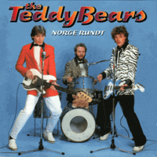

the Teddybears - Norge Rundt (Album, 1996)
01 - Norge Rundt (2:10)
02 - Harrygutt Fra Teisen (2:23)
03 - Van Nuys Boulevard (2:50)
04 - 53 Pontiac (2:55)
05 - Snackbaren På Hjørnet (2:00)
06 - To Tette - Badehette (3:22)
07 - Året Var '56 (2:13)
08 - Evig Rock'n'roller (2:20)
09 - Sommeren '55 (2:51)
10 - Yankee Boy (2:15)
11 - Alltid En "Deal" (2:21)
12 - Slutt Med Ruth (2:38)
13 - To Feite Striper Brylcreme (2:32)
14 - Jenta I Jeans (2:30)
15 - Din For Evig (2:09)
16 - Fra 54 Buick Til Mazda (2:38)
17 - Slaget Ved Hjulet (2:52)
18 - Til Toner Fra En Fender (3:05)
19 - Boogie Freddy (3:15)
20 - Lorang Og Han Andre (4:00)
21 - Siste Cruisin' (2:35)
© Tva 2015 :: [Digital] © Talent 1996 [TVA 1028-2]
Notes
Norway.
Jan Holberg - Guitar, Vocals
Øystein Mora - Bass, Vocals
Martin Kopperud - Drums, Vocals
reference information: Discogs®
Review
138/366 (Project 366)
Today is Norwegian Constitution Day. And I decided to review good Norwegian band with fifties pop, vintage rock'n'roll and rockabilly jive sound. With songs on Norwegian language. Quite exciting stuff!